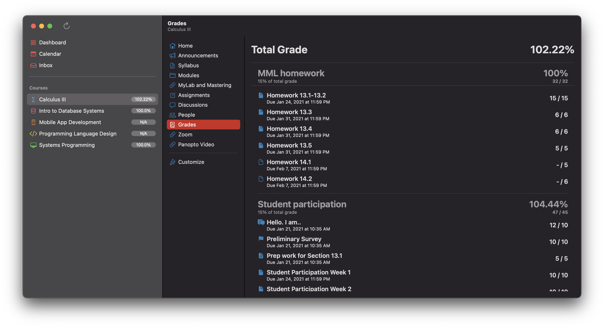

In many of my classes at Clark College and WSU Vancouver, we have used the Canvas learning management system (LMS) by Instructure for keeping track of assignments, quizzes, and grades. Instructure offers a very robust open-source mobile app for interfacing with Canvas, but on desktop computers, currently the only option is the website.
My app provides an interface for the Canvas service that is familiar to those who have used the mobile apps or website, but simultaneously feels right at home on macOS.
